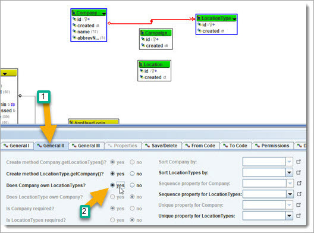
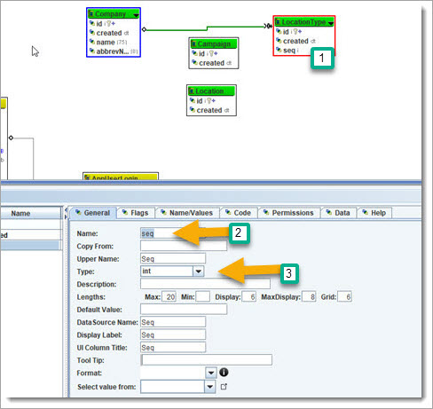
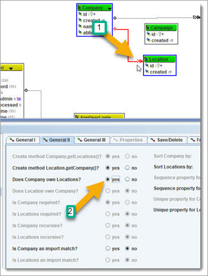
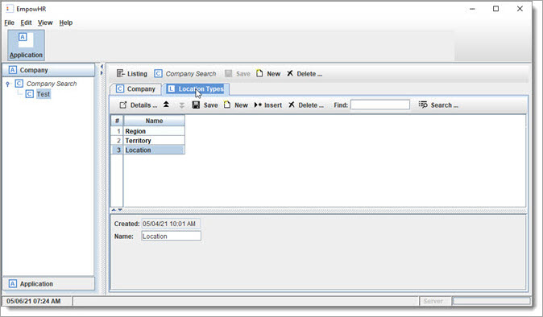
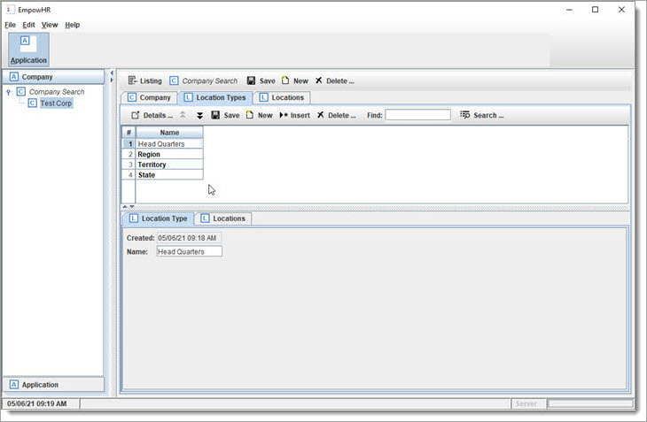
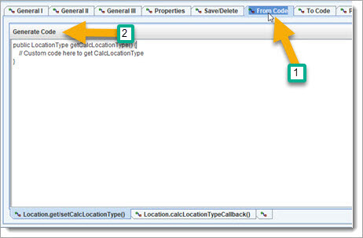
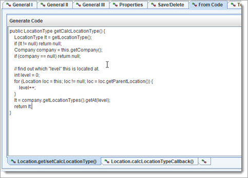
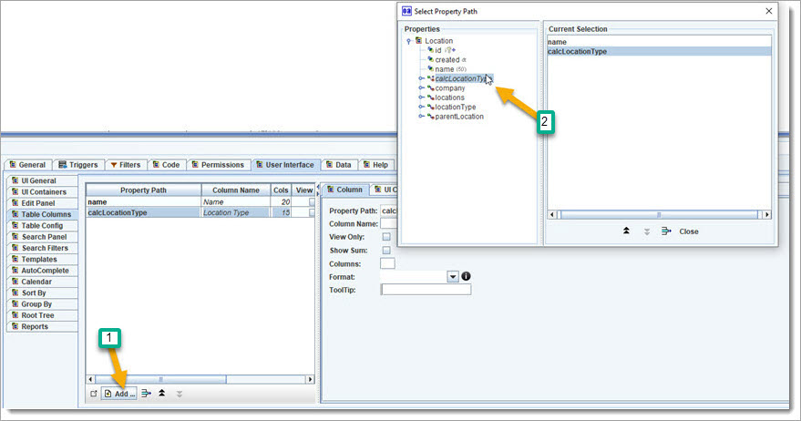
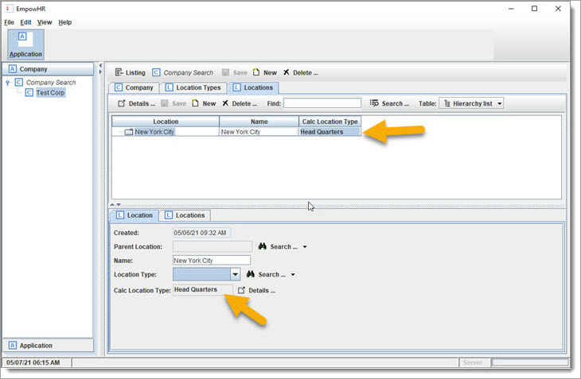

click the new Object button on the workspace toolbar, set the Object name, drag object to match screen shot.
then select all three (mouse drag to rubber band around them), and select a color green for them.

Now, create the following three new Objects:
click the new Object button on the workspace toolbar, set the Object name, drag object to match screen shot.
then select all three (mouse drag to rubber band around them), and select a color green for them.
Next, create the relationships between these Objects, starting with LocationType –
 BizRule: "A Company has many of its own Location Types", which is used to describe the
names of a company's types of locations. "own" means that the Location Types belong to a single Company, and not shared with other Company ... each Company has its own
Location Types. For example: Region, Territory, City, ...
BizRule: "A Company has many of its own Location Types", which is used to describe the
names of a company's types of locations. "own" means that the Location Types belong to a single Company, and not shared with other Company ... each Company has its own
Location Types. For example: Region, Territory, City, ...

Let us change the relationship to "owned", which means that it is only for the Company that created it, and they are treated as an aggregate (one unit).

We need one more thing for this, to be able to keep the sort order. To do this, we create a property that is a number, so create a new Property, name it "seq", set type
as "int"

... and then set the "seq" flag.

This will tell it to use this property to keep the sort order, so that it can make sure to
load it in the same order.
Now, let us use the "seq" property for the link ...

The Company.LocationTypes will
now be auto sequenced in the order that users position them.
You will notice that the link shows a "S" icon.
Note: "Company.LocationTypes" is a property path, an important concept for object graphs.

Next, add a couple of things to LocationType, and then we will  regenerate and run again.
regenerate and run again.
Add
a new "name" property. Notice that for the "Lengths", 25 is max input size. The display size is the default size of textfield, and max display is to allow the textfield
to grow to a length (usually the max). The grid length is for the column in a table/grid listing.

Now, let us go to the Object UI, and set the display property to "name" (under "UI General" left sub tab). Under "Table Columns" subtab, add
name. For "Search Panel", add "name".
Go ahead and  regen and run again.
regen and run again.

We now have Company.LocationTypes defined. This will be used in the next step, when
we set up Company Locations, and how each Location will "know" the Location Type.
First step is to create an owned link between Company and Location - " A Company has many Locations"

We are now going to set up Locations so that it can be multi-level. This is done by creating a link to itself and flagging it as recursive.

Let us add the following to Location:
create a property "name"

change Location
UI to use "name" as display property ("UI General" left subtab), and add name to table ("Table Columns" left subtab) and search ("Search Panel" left subtab).
 ReGen & Run
ReGen & Run

Next, we want to know a Location's LocationType, based on its level in the location hierarchy. There are two options, the first would be to allow the selection from the
Location's Company list of LocationTypes (Company.LocationTypes). The second is to have it automatically pick LocationType based on Company.LocationTypes list
to match the position of the Location under Company (since Location is recursive/hierarchy). We will choose both, so that a Location.LocationType can be directly
selected, else it will default to the Company.LocationTypes with same position.
<![endif]>
To do this, we will first create a Location.LocationType link. Right click the Location object and click new link, or click the link button on the workspace toolbar.
Now we need to make a couple changes to the new Location.LocationType. First make sure the relationship is One LocationType, Many Locations, and that the names are
"Locations" and "LocationType".

Next, we need to have choices for LocationType use
the LocationTypes from Company.LocationTypes. This is done be going to the "General III" tab and setting the value for "Select LocationType from:" to
Company.locationTypes.

Do a codegen and rerun the App

One last thing: click on the link Company.locations, go to the "General II" tab, and set "Is Locations Recursive" to checked.
 ReGen & Run: then add some data.
ReGen & Run: then add some data.
If you click on sidebar "Company Search", and then click the "new" button.

Set the name of this new Company to "TestCorp", abbrev name "TC".
Click on the "Location Types" tab, and use the "New" button to create and match the
following list:

Close the Application, and rerun again. Click the toolbar "Application" button, then click the sidebar "Company", notice that no Companies are showing. Click
the "Company Search" button, and then click the "Run Search" button to get a list of all the Companies. Your new Company will be on the list, and under the Company side
bar.

Note: the data is stored in the "runtime/single/data directory", in multiple
formats. They are also saved backup copies with files names that match.
To edit a Company, either click the Company showing in the sidebar "Test Corp", or you can click it in the search listing, and then pop it up by clicking the "Details
..." button in the bottom toolbar.
The first shows it inside the main window, the second will show it in a popup window.
Now, let us add a Location. Go to the following and add a new Location.

Notice that
the Location list will be recursive and displayed in a tree table.
Next, we want to allow the Location that has not been assigned a LocationType to default to the specific value in the Company.LocationTypes.
We will do this by
creating a "Calculated Link" between Location.LocationType and call it "Location.calcLocationType".
Right click on Location and choose the following:

Let us set up the Link.

Now, we need to set up the calculation. The first thing is to go to the "Properties" tab, and click "Add ..." to add property paths: "Company.locationTypes",
"Company.locations", and "locationType".

These are the property paths that are used to determine the correct Location.locationType, and needs to be recalculated if any of the values change.

Go to the "From Code", and add the code that will be used for the calculation. Click the "Generate Code" to have a template created to enter code.

Enter code, that shows that it first checks to see if a LocationType is assigned, else it will determine based on the Company.LocationTypes. 
 Review: We now have Company.Locations, that can be a hierarchy. The Company has a list of
LocationTypes, that can be directly assigned to a Location, or use the correct value from Company.LocationTypes.
Review: We now have Company.Locations, that can be a hierarchy. The Company has a list of
LocationTypes, that can be directly assigned to a Location, or use the correct value from Company.LocationTypes.
Let us add the Location.caclLocationType to the Location table columns.

 ReGen & Run
ReGen & Run

The Location.calcLocationType will either be the assigned LocationType, or if empty (null) it will be the same as the Company.LocationTypes(pos), where pos is the
position of this Location in the Company.Location hierarchy.